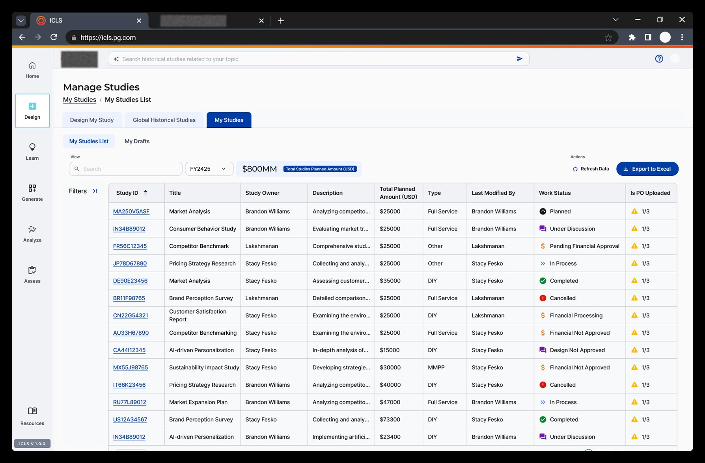
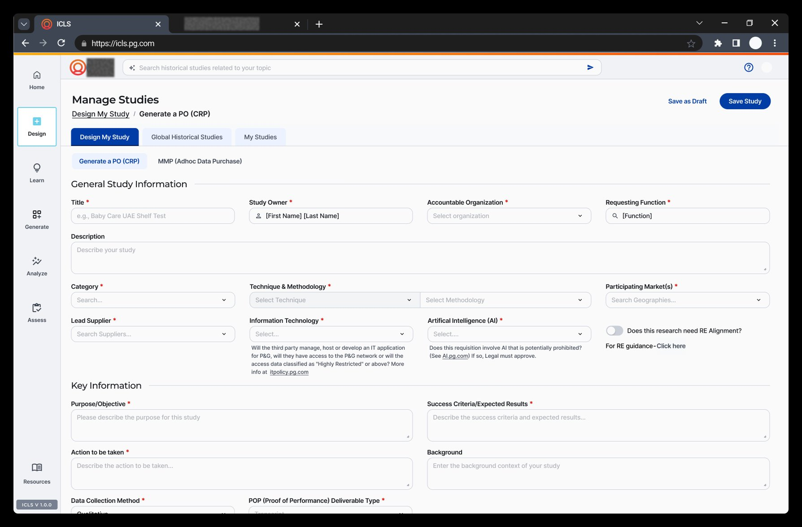
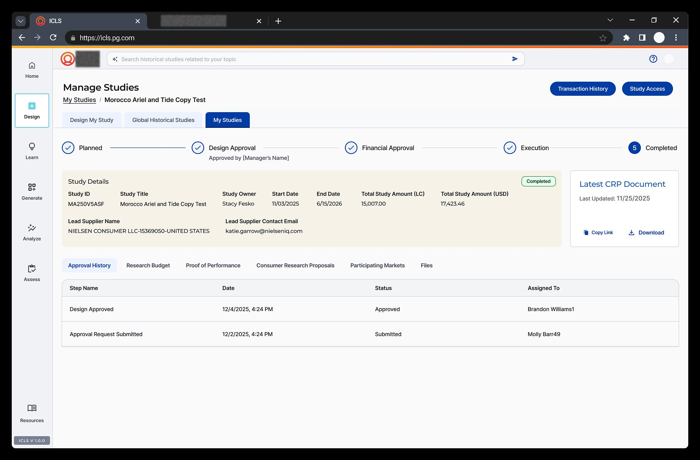

02 — The Platform
The live platform — icls.pg.com
Four core experiences redesigned: the discovery home, study management, research commissioning, and approval tracking. Every screen is in production.

Discovery Dashboard — Home
AI-powered "What do you want to discover today?" search. Five research modules — Design, Learn, Generate, Analyze, Assess — unified under one navigation. Replaces 7 separate entry points.
01

Study Management
$800MM planned budget visible at a glance. Status tracking, approvals, and bulk actions for all active studies. Reduced from a multi-screen workflow to a single view.
02

Research Commissioning (PO/CRP)
AI-integrated form flow for commissioning consumer research. Smart field suggestions, auto-fill from prior studies. The highest-friction task, made fast.
03

Study Detail & Approval Workflow
Clear 5-stage approval pipeline: Planned → Design Approval → Financial Approval → Execution → Completed. Full audit trail with timestamps, assignees, and document access. No more email chains.
04